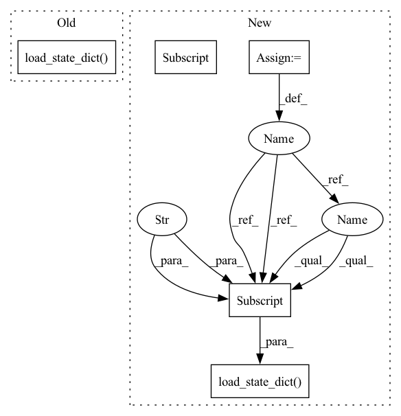

Pattern ID :20146

Before Change
best_test_mAP = test_mAP_2
// evaluate on test set
model_1_ema.load_state_dict(torch.load(logger.get_checkpoint_path("best")))
print("Test on target domain:")
_, test_mAP = validate(test_loader, model_1_ema, target_dataset.query, target_dataset.gallery, device,
cmc_flag=True, rerank=args.rerank)
print("test mAP on target = {}".format(test_mAP))
After Change
// optionally resume from a checkpoint
if args.resume:
checkpoint = torch.load(args.resume, map_location="cpu")
model_1.load_state_dict(checkpoint["model_1"])
model_1_ema.load_state_dict(checkpoint["model_1_ema"])
model_2.load_state_dict(checkpoint["model_2"])
model_2_ema.load_state_dict(checkpoint["model_2_ema"])
args.start_epoch = checkpoint["epoch"] + 1
// start training
best_test_mAP = 0.
In pattern: SUPERPATTERN
Frequency: 3
Non-data size: 5
Instances
Fragment ID: 65900237
Project Name: thuml/transfer-learning-library
Commit Name: 91cc646b6e3c004ef8e2aba07ee26ef7b652116f
Time: 2021-09-03
Author: chenbx18@mails.tsinghua.edu.cn
File Name: examples/domain_adaptation/reid/mmt.py
M Class Name: AnonimousClass
N Class Name: AnonimousClass
M Method Name: main(1)
N Method Name: main(1)
M Parent Class:
N Parent Class:
M File Name: examples/domain_adaptation/reid/mmt.py
N File Name: examples/domain_adaptation/reid/mmt.py
M Start Line: 39
M End Line: 164
N Start Line: 120
N End Line: 173
'>
Before Change
best_test_mAP = test_mAP_2
// evaluate on test set
model_1_ema.load_state_dict(torch.load(logger.get_checkpoint_path("best")))
print("Test on target domain:")
_, test_mAP = validate(test_loader, model_1_ema, target_dataset.query, target_dataset.gallery, device,
cmc_flag=True, rerank=args.rerank)
print("test mAP on target = {}".format(test_mAP))
After Change
// optionally resume from a checkpoint
if args.resume:
checkpoint = torch.load(args.resume, map_location="cpu")
model_1.load_state_dict(checkpoint["model_1"])
model_1_ema.load_state_dict(checkpoint["model_1_ema"])
model_2.load_state_dict(checkpoint["model_2"])
model_2_ema.load_state_dict(checkpoint["model_2_ema"])
args.start_epoch = checkpoint["epoch"] + 1
'>
Fragment ID: 65900236
Project Name: thuml/transfer-learning-library
Commit Name: 91cc646b6e3c004ef8e2aba07ee26ef7b652116f
Time: 2021-09-03
Author: chenbx18@mails.tsinghua.edu.cn
File Name: examples/domain_adaptation/reid/mmt.py
M Class Name: AnonimousClass
N Class Name: AnonimousClass
M Method Name: main(1)
N Method Name: main(1)
M Parent Class:
N Parent Class:
M File Name: examples/domain_adaptation/reid/mmt.py
N File Name: examples/domain_adaptation/reid/mmt.py
M Start Line: 39
M End Line: 164
N Start Line: 120
N End Line: 173
'>
Before Change
:param path: (str)
self.load_state_dict(th.load(path))
def load_from_vector(self, vector: np.ndarray):
Load parameters from a 1D vector.
After Change
:param path: (str)
device = get_device()
saved_variables = th.load(path, map_location=device)
model = cls(**saved_variables["data"])
model.load_state_dict(saved_variables["state_dict"])
model.to(device)
return model
def load_from_vector(self, vector: np.ndarray):
'>
Fragment ID: 65900232
Project Name: dlr-rm/stable-baselines3
Commit Name: a4df08cd287e8c57a214f988880cd2016f86f835
Time: 2020-04-20
Author: antonin.raffin@ensta.org
File Name: torchy_baselines/common/policies.py
M Class Name: BasePolicy
N Class Name: BasePolicy
M Method Name: load(2)
N Method Name: load(2)
M Parent Class: nn.Module
N Parent Class: nn.Module
M File Name: torchy_baselines/common/policies.py
N File Name: torchy_baselines/common/policies.py
M Start Line: 211
M End Line: 211
N Start Line: 227
N End Line: 232
'>
Before Change
best_test_mAP = max(test_mAP, best_test_mAP)
// evaluate on test set
model.load_state_dict(torch.load(logger.get_checkpoint_path("best")))
print("Test on target domain:")
_, test_mAP = validate(test_loader, model, target_dataset.query, target_dataset.gallery, device,
cmc_flag=True, rerank=args.rerank)
print("test mAP on target = {}".format(test_mAP))
After Change
// optionally resume from a checkpoint
if args.resume:
checkpoint = torch.load(args.resume, map_location="cpu")
model.load_state_dict(checkpoint["model"])
args.start_epoch = checkpoint["epoch"] + 1
// start training
best_test_mAP = 0.
'>
Fragment ID: 65900235
Project Name: thuml/transfer-learning-library
Commit Name: 91cc646b6e3c004ef8e2aba07ee26ef7b652116f
Time: 2021-09-03
Author: chenbx18@mails.tsinghua.edu.cn
File Name: examples/domain_adaptation/reid/baseline_cluster.py
M Class Name: AnonimousClass
N Class Name: AnonimousClass
M Method Name: main(1)
N Method Name: main(1)
M Parent Class:
N Parent Class:
M File Name: examples/domain_adaptation/reid/baseline_cluster.py
N File Name: examples/domain_adaptation/reid/baseline_cluster.py
M Start Line: 37
M End Line: 156
N Start Line: 89
N End Line: 162